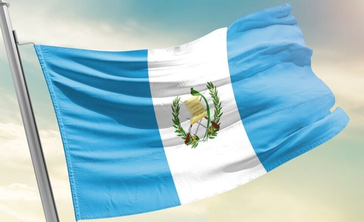
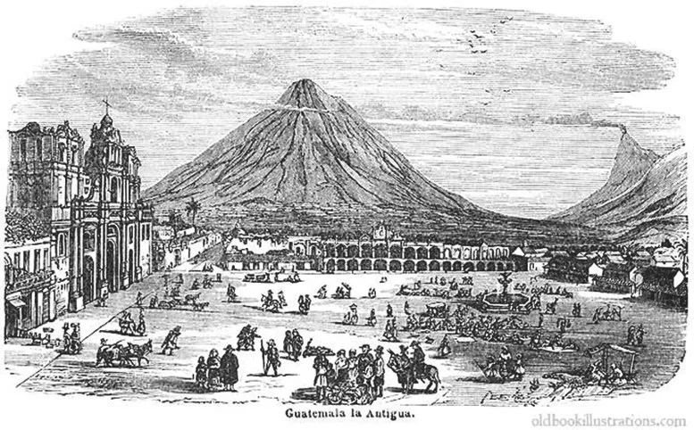

-
La Bandera

La bandera es considerada símbolo patrio de Guatemala, su día se celebra cada 17 de agosto. La actual bandera fue creada según el Acuerdo No. 12 del 17 de agosto de 1871, por el presidente Miguel García Granados.
El 17 de agosto de 1871 se determinó que la Bandera tuviera dos colores: el azul celeste y el blanco. La franja blanca entre las dos celestes representa el hecho de que el país se encuentra entre el océano Pacífico al sur y el mar Caribe al noroeste. En el centro aparece el Escudo Nacional.
El blanco representa pureza, integridad, fe, obediencia, firmeza, vigilancia, paz y nación. El azul simboliza justicia, lealtad, dulzura, fortaleza, cielo guatemalteco y los dos mares citados que bañan las costas del país, al igual que las de Centroamérica.
-
El Escudo de Armas

El Escudo de Armas es Símbolo Nacional y su significado representa la justicia y soberanía, la victoria, la inmortalidad de la libertad. De acuerdo con dicho Decreto, el color blanco representa pureza, paz, integridad, firmeza y luz; el azul expresa fortaleza, justicia, verdad y lealtad.
Historia
Guatemala fue poblada por los espanoles in el ano 1524. La capital fue trasladada varias veces. Primeramente de Santiago de Tecpan a Ciudad Vieja, en el ano 1527; mas tarde, en 1543 a Antigua y finalmente a la Cuidad de Guatemala en 1773.
En 1821, Guatemala logro su independencia del dominio espanol. Sin embargo a raiz de inestabilidades de caracter interno, tanto en este país, como en todos los demas países de Centroamerica, excepto El Salvador, el mismo fue anexado a México en el ano 1822, se logro dar formacion a lo que de dio en llamar las Provincias Unidas de Centroamerica. En 1847, logro Guatemala, finalmente afirmar su independencia nacional, razon por la cual a partir de ese entonces, ha sido conocida como una republica totalmente separada del resto de las naciones centroamericanas.

Guatemala fue colonia española por casi 300 años, antes de su independencia el 15 de septiembre de 1821; tras un breve período de incertidumbre política pasó a formar parte del imperio mexicano y posteriormente perteneció a una federación denominada Provincias Unidas de Centro América, hasta que la federación se desintegró con una guerra civil entre 1838-1840. Desde entonces, la historia de Guatemala ha estado dividida entre períodos de gobiernos democraticos y períodos de guerra civil y juntas militares. Guatemala emergió de una guerra de 36 años tras la firma de los acuerdos de paz en 1996.